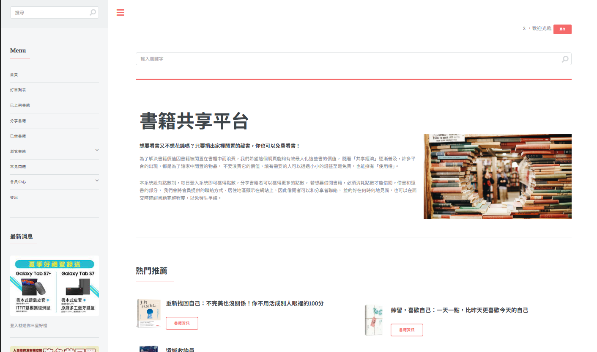

本專案是大學期間「系統分析與實作」 課程中的團隊小專題，主要目的是透過實際開發， 將系統分析、資料庫設計與程式實作結合。
團隊以共享書籍為主題，使用 PHP 與 MySQL 建立網站平台，讓使用者能夠瀏覽書籍資訊、 分享書籍及進行借閱預約。
後續我重新整理這個專案，重新建立本機開發環境、 重建資料表，並排查原有程式問題， 讓自己重新熟悉 PHP 與資料庫的實際操作。
PROJECT 02 · SYSTEM ANALYSIS
大學期間參與的團隊小專題，使用 PHP 與 MySQL 開發共享書籍平台，提供會員管理、書籍瀏覽、 書籍上架及借閱預約等功能。
PROJECT OVERVIEW
本專案是大學期間「系統分析與實作」 課程中的團隊小專題，主要目的是透過實際開發， 將系統分析、資料庫設計與程式實作結合。
團隊以共享書籍為主題，使用 PHP 與 MySQL 建立網站平台，讓使用者能夠瀏覽書籍資訊、 分享書籍及進行借閱預約。
後續我重新整理這個專案，重新建立本機開發環境、 重建資料表，並排查原有程式問題， 讓自己重新熟悉 PHP 與資料庫的實際操作。
SYSTEM PREVIEW

CORE FEATURES
提供會員帳號相關功能， 作為使用平台服務的基礎。
瀏覽平台上的書籍資訊， 了解可分享的書籍內容。
提供書籍資料新增功能， 讓使用者分享自己的書籍。
提供書籍借閱預約功能， 串接相關資料操作流程。
TECHNOLOGY
MY PRACTICE
大學專題結束後，我重新整理原本的程式， 嘗試讓網站能夠在目前的本機環境重新運作。 這個過程也讓我重新接觸過去學習的技術， 並練習從錯誤訊息找出問題。